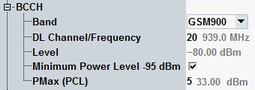

The following parameters configure basic BCCH settings.

Selects the GSM band used for the BCCH. This band is initially also used for the TCH, but the TCH band can be changed via a handover. The GSM band determines the range of available RF "Channels" and the channel/frequency assignment.
For a complete overview of GSM bands, refer to "GSM Bands and Channels".
Currently, the R&S CMW supports a subset of GSM bands.
Remote command:GSM channel number for the broadcast control channel (BCCH) that the R&S CMW generates to set up and maintain the connection to the mobile station under test. The BCCH is transmitted in timeslot no. 0 of the generated GSM downlink signal.
The carrier center frequency corresponding to the channel number is displayed for information.
The channel settings for the BCCH and the traffic channel (TCH) are independent from each other. The allowed channel range depends on the selected GSM band.
For background information, see "GSM Bands and Channels".
Remote command:Absolute level of the broadcast control channel (BCCH) in dBm.
For scenarios using the same path for all downlink channels (e.g. standard cell), the level is identical for all channels. In that case, the BCCH level is only displayed for information and equals the "DL Reference Level" with the minimum level limit of -95 dBm.
For scenarios using separate paths for BCCH and TCH (e.g. "BCCH and TCH/PDCH" scenario), the BCCH level can be configured independently of the reference level.
This parameter is only configurable for scenario "BCCH and TCH/PDCH", see "RF Signal Routing".
Remote command:Enables or disables the check of BCCH lower limit of -95 dBm. Locking the limit check is useful, for example, for BER measurement on adjacent TCH.
Remote command:Maximum transmitter output level of the MS allowed in the cell. The value corresponds to the output power at which the mobile station performs a location update (access burst level).
The level PMax is defined as a power control level (PCL) value in the range between 0 and 31. The corresponding absolute level in dBm is displayed for information. The definition of the PCL range depends on the GSM band; see "Power Control Levels".
Note: After a dual-band handover to another GSM band, PMax is also valid in the destination network. Due to the band-specific PCL scales, the actual maximum MS output power changes if one of the bands GSM 1800/GSM 1900 and a lower-frequency band is involved.
Example: PMax = 5, handover from GSM 900 to GSM 1800.
In the original network, PCL 5 corresponds to a maximum output power of 33 dBm, in the destination network, to 20 dBm. To reach the maximum output power of 30 dBm for GSM 1800, PMax must be set to 0.